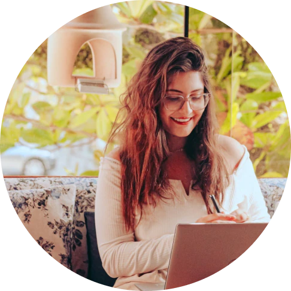

Criamos marcas significativas, memoráveis e valiosas
Mergulhamos muito além da superfície para chegar ao coração da sua marca e oferecer uma experiência verdadeiramente adaptada às suas necessidades. Nossa equipe de profissionais vai te apoiar em todos os aspectos da jornada.
Da paleta de cores às formas, imagens e tipografia, cada elemento de design é minuciosamente considerado para garantir uma marca única e relevante.


Nós não criamos logotipos...
Criamos universos visuais.
Nosso studio se guia pela estratégia em primeiro lugar. Queremos proporcionar a experiência de uma viagem única no processo de construção da sua marca, sendo o seu guia nessa jornada, te ajudando a construir uma identidade memorável.
Nossos valores
O que nos guia
- Colaboração
- Envolvimento
- Transformação
- Compromisso
- Liberdade
- Excelência
- Dedicação
- Empatia
- Amor
Conheça sua principal guia
Hola! Sou Julia 🙂
Sou a fundadora e diretora criativa do Buenas Design Studio. Sou designer de marcas, criadora de conteúdo e publicitária.
Trabalho como designer há mais de 8 anos, tendo uma vasta experiência com diversas empresas e clientes em 9 países.
Além disso, sou uma viajante do mundo – por isso meu studio é internacional e temático desse universo! Tenho mais de 4 intercâmbios no currículo, sou nômade digital há mais de quatro anos e hoje estou morando na Espanha.
Acredito muito que o design deve ser sempre único, funcional e deve sempre se conectar com o público-alvo. Trabalho de forma imersiva, dedicada e artesanal, ajudando empresas a voar mais alto, aumentando a notoriedade e o reconhecimento da marca.
Iremos juntas buscar a essência da sua marcar e mergulhar fundo no seu projeto. Estou muito feliz por ser sua guia nessa jornada. Faça as malas e vamos lá 🙂

Tudo que você precisa saber
(e algumas coisas que você provavelmente não precisa)

Comida favorita
Adoro comer, mas não cozinho. Sim… vá entender. Essa é difícil.
Adoro strogonoff, parmegiana e hambúrgueres. Também adoro o Ojo de Bife, carne argentina deliciosa!
Lugar favorito
Nova York é o meu lugar! Eu amo tanto aquela cidade. A diversidade, a vibração, sempre ter algo novo para fazer… você ouve tantas línguas. É tão rico de muitas maneiras. Você é livre pra ser quem é. Meu primeiro intercâmbio foi para NYC, a cidade tem um lugar muito especial no meu coração.
Lugar mais lindo que visitei
Essa é difícil! Mas eu diria Lauterbrunnen, na Suíça. É de literalmente chorar de tanta beleza!
Fato estranho sobre mim
Quando eu era criança, pensava que se cavasse um buraco fundo o suficiente, chegaria ao Japão. hahaha
Fato engraçado!
Buenas é uma saudação em espanhol, também significa algo bom. A inspiração para o nome veio enquanto morava em Buenos Aires.
Criamos design para mulheres empreendedoras que desejam marcas apaixonantes, valiosas e estratégicas
AGENDE UM CAFÉ VIRTUAL


Algumas das marcas que já viajaram conosco

